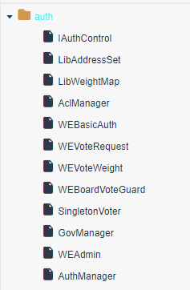

FISCO-Governance-权限
WeBankBlockchain-Governance-Authority定位为区块链权限治理组件，旨在为智能合约开发者提供强大、轻便的权限管理工具，使得开发者可以快速地为自己的业务系统搭建智能合约权限控制体系。
https://governance-doc.readthedocs.io/zh_CN/latest/docs/WeBankBlockchain-Governance-Auth/gov.html
组件介绍
1 背景
随着智能合约业务日益丰富，越来越多的合约需要引入权限控制。如果不对智能合约做权限控制，那么无法满足业务的安全性要求。例如，存证场景中，除了上传存证的函数外，还有许多专供审核人员调用的函数，这些函数应仅由审核人员来使用，如果这些函数没有正确设置权限拦截逻辑，整套逻辑就会被攻击者轻易操控。
WeBankBlockchain-Governance-Authority的目的在于为智能合约开发者提供权限控制功能。开发者只要添加少量代码，即可拦截非法调用。同时，有一个专门的权限治理合约用于治理各个业务合约的拦截规则，对规则的修改只需操作权限治理合约，不需要调整业务合约，且修改会实时生效。
2 特性
2.1 函数级的权限粒度
在权限体系中，可以为每个函数单独设置权限，同一个合约中的不同函数可以有不同的权限设置
2.2 批量设置用户权限
合约函数的权限配置基本单位为组，是的可以设置整批账户的权限访问规则
2.3 侵入性低
业务合约只需要在代码中引入权限合约地址，并通过在需要权限控制的函数中访问权限合约的权限判断接口，就可以实现权限控制
2.4 易于集成
对于权限管理人员，既支持通过手动方式来调用权限合约，也支持通过SDK方式进行调用
2.5 支持多种治理方式
允许中心化和去中心化两种方式进行权限治理。在中心化方式中，有一位管理员，可以直接设置各个账户的权限信息；在去中心化方式下，有一个治理委员会，治理委员会成员通过投票来决定如何更改权限信息。
3 整体原理

合约角度来看，合约分为业务合约和权限合约，业务合约包含了业务逻辑，权限合约包含了权限信息。从角色划分来看，参与角色分为普通调用者和管理员，普通调用者用于调用业务合约，而管理员负责修改权限合约中的合约信息。
普通调用者调用业务合约，业务合约内部的拦截器会向权限合约查询用户是否有权限调用该函数
权限合约的鉴权依赖存储其内部的“组权限信息列表”，每个组都记录了包含哪些地址、哪些函数、运行于什么模式。
组A包含Alice 和Bob 两个地址，并关联了某合约的helloworld函数，
且组A在白名单模式下，那就意味着只有alice和bob可以访问该合约的helloworld函数，其他账户无权访问。
4 场景示例
假设现在要开发一个存证智能合约，要求其中某些函数仅能由审查员来调用，例如验证存证。这时，权限合约的管理员到权限治理合约中配置“审查员”组，将审查员的地址添加到该组中、添加相应函数，并将组设为白名单模式。如此配置完成后，权限规则即生效，当审查员之外的账户在调用这些函数的时候，均会被拦截掉，有且仅有审查员可以调用这些函数。
快速开始
权限组件的使用者包括两个角色：治理方和业务方。治理方负责权限合约的部署、配置；业务方负责接入权限合约、拦截非法调用。这一节提供一个简单但完整的示例，通过部署并为业务合约HelloWorld配置权限，以使您了解整个组件的使用流程。这一节的内容包括：
- 【治理方】部署权限合约
- 【业务方】部署HelloWorld合约
- 【治理方】配置HelloWorld的权限
- 【业务方】权限验证
1 | |
代码实现

治理手册
权限合约是本组件提供的AuthManager合约，用于配置哪些账户可以访问哪些合约的哪些函数。可以治理多个业务合约的权限。
1 关键概念
1.2 组
组定义了哪些账户可以访问哪些函数。组包含的信息如下：
- 账户列表
- 模式。包含两个可选择的模式：
- 黑名单模式
- 白名单模式
- 函数列表
1.3 治理模式
权限治理合约有两种模式: 管理员模式、委员会模式
- 管理员模式下，由单一管理员修改配置；还可以转让管理员权限
- 委员会模式下，所有操作均通过投票进行。 委员会成员可以修改组配置。 还可以修改委员会列表，投票规则等。
一个权限治理合约的模式在部署时即确定，一旦确定一种模式，就无法更改。
1.4 投票模式
投票包含两种规则：多签模式和阈值权重模式。
- 多签模式下，当投票数达到最小签名数时，投票即通过。
- 阈值权重模式下，每个委员均配有对应的权重，当已投票的总权重达到最小阈值时，投票即通过。
多签是阈值权重模式下的一个特例，即所有委员会的权重为1。
2 AuthManager合约接口列表
合约部署
合约部署时需要决定是管理员模式还是治理委员会模式。以下为管理员模式下权限配置接口：createGroup 创建组
addAccountToGroup 将账户添加到组
addFunctionToGroup 将合约函数关联到组
removeAccountFromGroup 将账户从组内移除
removeFunctionFromGroup 将合约函数与组的关联取消
以下为治理委员会模式下的权限配置接口：
requestCreateGroup 请求创建组
requestAddAccountToGroup 请求将账户添加到组
requestAddFunctionToGroup 请求将合约函数关联到组
requestRemoveAccountFromGroup 请求将账户从组内移除
requestRemoveFunctionFromGroup 请求将合约函数与组的关联取消
approveSingle 投票请求
deleteSingle 删除请求
getRequestSingle 查看请求
executeCreateGroup 创建组
executeAddAccountToGroup 执行将账户添加到组
executeAddFunctionToGroup 执行将合约函数关联到组
executeRemoveAccountFromGroup 执行将账户从组内移除
executeRemoveFunctionFromGroup 执行将合约函数与组的关联取消
以下为通用的查询接口
containsAccount
containsFunction
getGroup
canCallFunction
以下为管理员模式下的治理接口：
transferAdminAuth
isAdmin
以下是治理委员会模式下的治理接口：
requestSetThreshold
requestResetGovernors
executeSetThreshold
executeResetGovernors
requestAddGovernor
deleteAddGovernorReq
approveAddGovernorReq
getGovernorsToAdd
executeAddGovernorReq
requestRemoveGovernor
deleteRemoveGovernorReq
approveRemoveGovernorReq
getGovernorsToRemove
executeRemoveGovernorReq
2.1 部署合约
1 | |
本博客所有文章除特别声明外，均采用 CC BY-SA 4.0 协议 ，转载请注明出处！